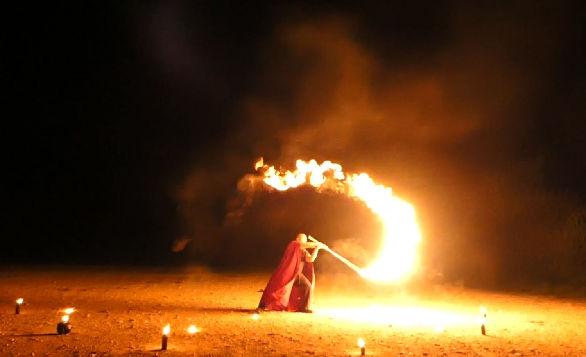
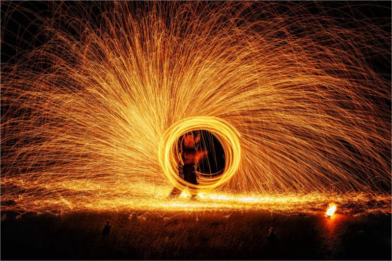

Effets de feu
Des effets de feu et d’étincelles conçus pour enrichir un spectacle ou mettre en valeur un moment fort d’un événement. Braises incandescentes, gerbes de flammes ou traînées d’étincelles peuvent être intégrées à une prestation, accompagner une animation ou créer un final marquant.
Effets de braises incandescentes
Prestation de cage à charbon produisant un véritable rideau de braises incandescentes. Un effet visuel rare et hypnotique, créant une cascade d’étincelles rouges et lumineuses pour sublimer un moment fort du spectacle ou marquer un final mémorable.

Effets de poudre inflammable
Mise en scène de poudres inflammables, comme le lycopode ou le Fire-Fly, pour créer de brèves gerbes de flammes et des effets lumineux saisissants. Un effet spectaculaire permettant d’accentuer un mouvement, de souligner un passage du spectacle ou de créer un moment de surprise.

Effets de paille de fer
Utilisation de paille de fer pour créer des gerbes d’étincelles lumineuses en mouvement. Un effet particulièrement visuel, offrant un contraste saisissant entre l’obscurité et les longues traînées d’étincelles, idéal pour accompagner une manipulation ou renforcer un moment fort d’une animation.

Parlons des effets de feu pour votre événement
Chaque événement étant différent, le tarif dépend notamment du lieu, des conditions d’accueil et des options choisies.
Demander un devisRéponse personnalisée et devis gratuit.